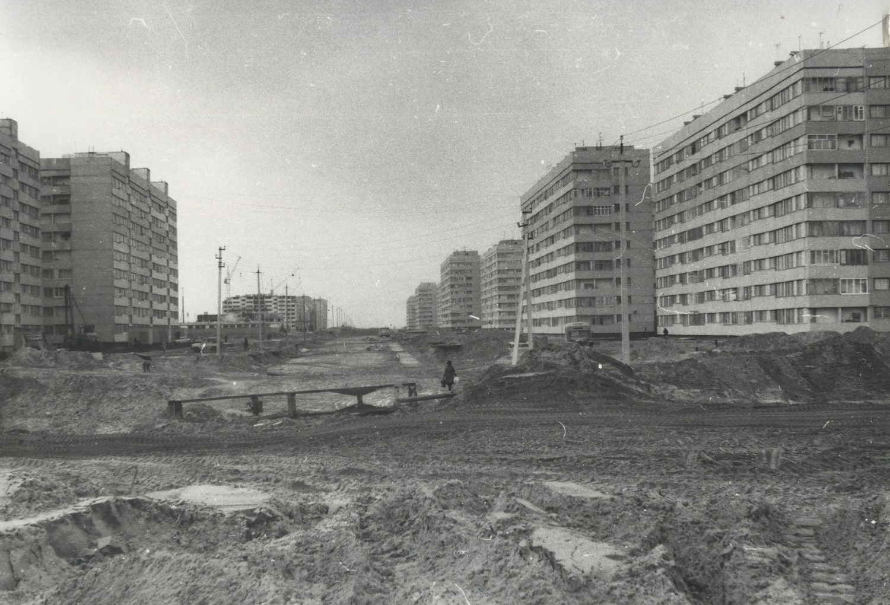
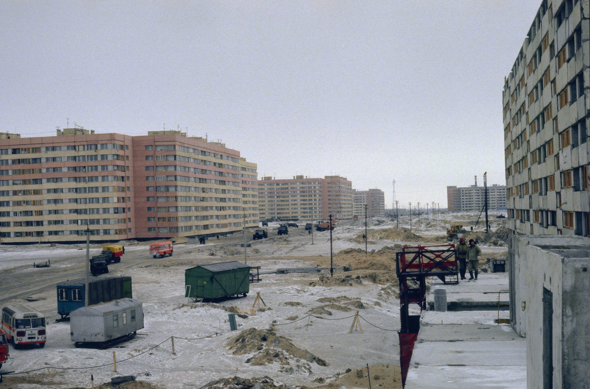
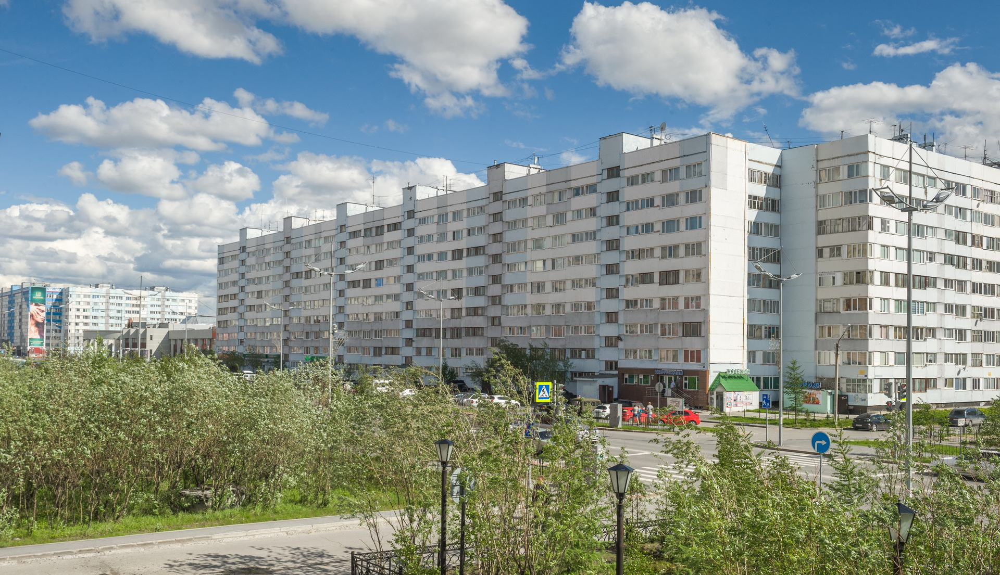
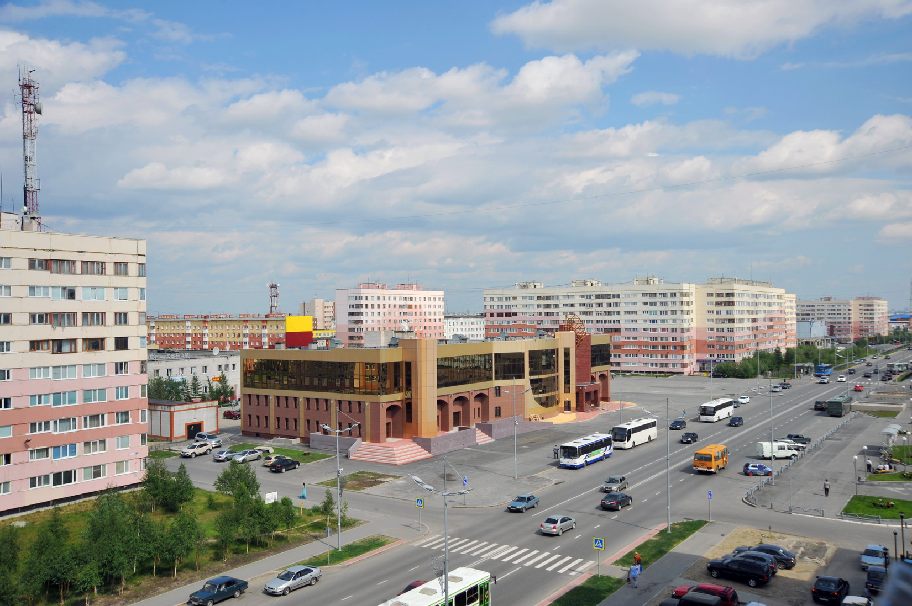
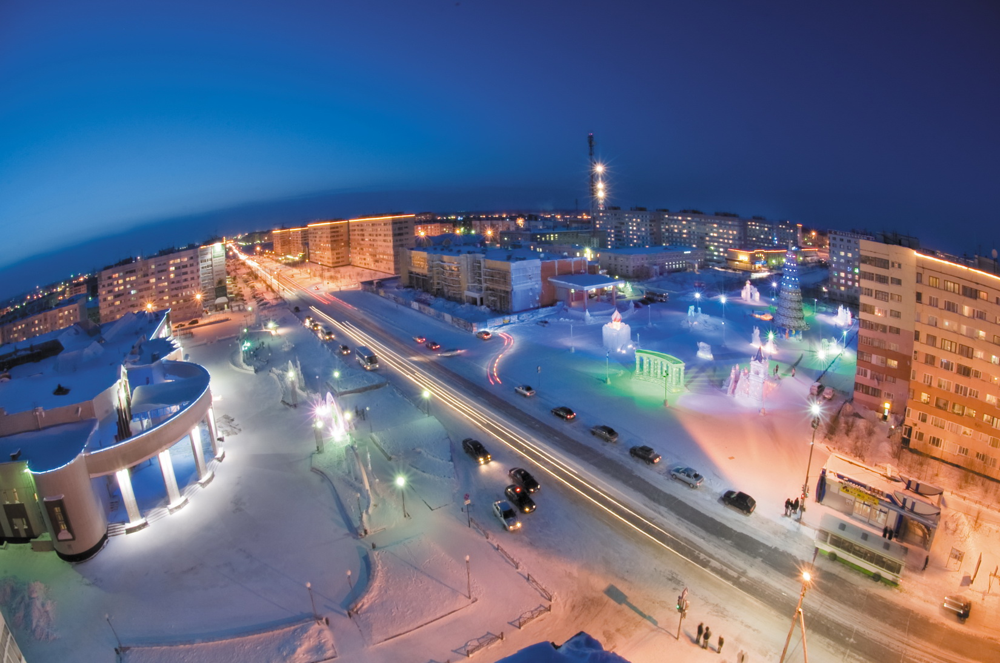

В Новом Уренгое к достопримечательностям относятся целые улицы. Ленинградский проспект – главная улица города. Он — современник эпохи «большого газа», когда строили не красоты ради, а быстро и на совесть.
{kind=link}

Центральный проспект Нового Уренгоя очень похож на Юго-Западный район Санкт-Петербурга. В том районе северной столицы больше всего таких многоквартирников серии 1ЛГ-600, которые в народе называют кораблями. Строительство домов 600-й серии осуществлялось по переработанному польскому проекту с 1967 по 1989 год в Ленинграде и его пригородах. Название «корабль» дома получили за схожесть с многопалубными лайнерами. Проект посчитали удачным для Крайнего Севера и стали возводить в Новом Уренгое. Вот так северная столица подарила частичку себя столице газовой.
{kind=link}

Проспект воплотили в жизнь строители ЗАО «Ленуренгойстрой» Ленинградским строителям потребовалось всего 5 лет, чтобы центральный проспект Нового Уренгоя взметнулся ввысь. Осенью 1980 года был заложен фундамент первой многоэтажки, а уже через год, в июле 81 года, больше ста семей отпраздновали новоселье. Специалистам тогда хватало трёх месяцев, чтобы дом был готов к заселению. Вместе со строителями трудились штукатуры-маляры, стропальщики, плотники и монтажники – бойцы комсомольских отрядов. Последний, 28 дом на проспекте Ленинградский был закончен в 1985 году. Чётную сторону выкрасили в серо-голубой, а нечётную — в желто-красные цвета. Известно, что всего в городе 48 домов старого ленпроекта. Кстати, сегодня это вполне ликвидное и относительно комфортное жильё эконом-класса.
{kind=link}

Фотография Бориса Великова
Архитектурным центром Ленинградского проспекта стал первый в городе Дворец культуры «Октябрь». В 1985 году Новый Уренгой посетил Генеральный секретарь ЦК КПСС Михаил Сергеевич Горбачев. Высокий гость заметил местным властям, что в городе нет Дворца культуры. Средств на этот объект тогда не было даже в далекой перспективе. Однако, новоуренгойские руководители приняли решение о строительстве внепланового объекта и объявили стройку народной, ударной. Работа кипела круглосуточно. И вот в декабре 1987 года ГДК «Октябрь» распахнул свои двери для новоуренгойцев и гостей города. Сегодня здание «Октября» матово-золотое со знойно-кофейными витражами. Но старожилы навсегда запомнят его строением из красного кирпича, куда съезжались со всей страны певцы и артисты, и где показывали самые волнующее киноленты.

Фотография Александра Зинченко

Фотография Александра Зинченко
По традиции, новоуренгойцы выходят на Ленинградский проспект в День Победы, чтобы поздравить Ветеранов и отдать дань памяти погибшим героям военных лет. По главной улице проходят колонны трудовых коллективов города, а творческие ансамбли и артисты представляют праздничный концерт на уличной сцене ГДК «Октябрь». В честь Дня города и работников нефтяной и газовой промышленности на проспекте разворачиваются праздничный Арбат, фотозоны, творческие мастерские, спортивные и познавательные площадки развлечения на любой вкус.
{kind=link}

Фотография Бориса Великова
К Ленинградскому проспекту примыкает главная площадь Нового Уренгоя, на которой проходят все наиболее значимые мероприятия. В скором времени площадь заиграет новыми красками: 7000 квадратных метров старого покрытия заменят на нескользящую гранитную плитку. Для того, чтобы при проведении массовых мероприятий не было проблем с подключением музыкального или другого оборудования запланированы работы по прокладке кабельных и малоточных сетей. Принципиальные моменты будущего благоустройства — площадь останется пешеходной, а количество парковочных мест увеличится. Во всем продуманы неординарные архитектурные решения: освещение в несколько уровней, световые фигуры и символика города, гранитное покрытие, гармонично подобранное по цвету.
Сбудется мечта любителей двухколесного транспорта — вдоль переходной зоны протянется велодорожка. Предусмотрена и детская площадка, которую наполнят самыми лучшими качелями и горками. Специалисты обещают — игровая зона будет для детей разных возрастов. Одна из главных задач проекта – бережное отношение к хрупкой экосистеме Крайнего севера. Строители сохранят все деревья, которые сейчас растут на городской площади.
{kind=link}

Фотография Бориса Великова
Городская площадь связывает главные культурные центры города — ГДК «Октябрь» и КСЦ «Газодобытчик». Культурно спортивный центр был сдан в эксплуатацию в 2000 году. Уникальное сооружение включает в себя несколько залов: концертный на 590 мест, театральный на 170 мест, кинозал, спортивный на 400 мест, тренажерный, танцевальный, выставочный, гостиный, а также зимний сад, кафе и бар. КСЦ «Газодобытчик» располагает всеми условиями для организации торжественных приемов, официальных встреч, фестивалей различных уровней, гастрольных выступлений. Входит в число предприятий ООО «Газпром добыча Уренгой».